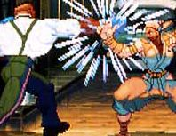

|


Review
Game Type: 2D Fighting
This is the series that defines 2D fighting. Need I say more?
Gameplay: 95/100
I must first make it clear that my ratings will treat Second Impact
as its own distinct game, for which I respect it, rather than as an upgrade
to SF3, which I do not.
Truth is that not that much has changed. There are only three new playable
characters, only one of which Capcom had to do any new artwork for, and that
one character design is horribly lame. Aside from that there are a few new
backgrounds and pallette swaps of all the others, a few new special moves
scattered among the characters (Yang now has a few moves different from Yun),
and tweaks and timing changes to many existing moves and combos.
I won't say that it's not an improvement, though. Experienced
SF3 players will have to relearn even their old favorite characters to work new
moves into their routine or compensate for a change in the timing of a combo. And
of course there are new characters like the upgraded Akuma, Gill (in the form of
his slightly weaker lookalike Urien), and the Andore-esque Hugo to learn how to
use and/or abuse. And of course the same old addictive SF3 gameplay is there, just
tweaked and (maybe?) improved.
OK, so it's not much of an upgrade. But it is an excellent game. It's based on
the greatest fighting game ever, so how could it not be?
Graphics: 90/100
Gameplay wasn't the only area that was tweaked. Menus, onscreen displays,
the stages themselves... everything has a darker, cooler look now. Gone are the
cute bystanders like the wannabe ninjas by Ibuki's dojo, or the silly tribesmen
at Elena's arena. The effect is very cool. The same insanely high level of
animation quality is still there of course. A further improvement to an already
graphically beautiful game.
Sound: 90/100
Even music and sound have been tweaked to a degree, and the snippets of new
tunes I've heard do sound quite cool. Like most people, though, I can only play
this in a noisy arcade for now, so I can't go into audio extensively. Maybe
someday they'll reintroduce headphone jacks like on the Neo-Geo systems.
Overall: 95/100
I don't know at this point which will game history will remember, SF3 or
this new revision. Frankly either would do. But there's no doubt that fighting
game fans will look back fondly on one or the other.
When playing SI you'll find yourself thinking "this is how it should have
been in the first place..." more than once - in regard to the moves, graphics,
you name it. It's not changed sufficiently for me to look on it as a whole new
game, to be sure. But hey, you should be making at least weekly trips to the
arcade to play SF3 even without a new revision.
Codes
| Fight Extra Opponent |
Win five rounds in a row with Super Finishes. |
| Fight Akuma |
Get three perfects without losing a round. Akuma will appear after Gill. |
| Fight Super Turbo Akuma |
Win against Akuma with two Super Finishes. |
| Play as Akuma |
On the Character Select screen, highlight Ryu and tap D, D, U, highlight
Ken and tap U, U, D, highlight Ryu and tap U, highlight Ken and tap D, and
highlight Sean and tap D, D, U, D, U, U, U. Akuma should appear on the
selection screen. |
|